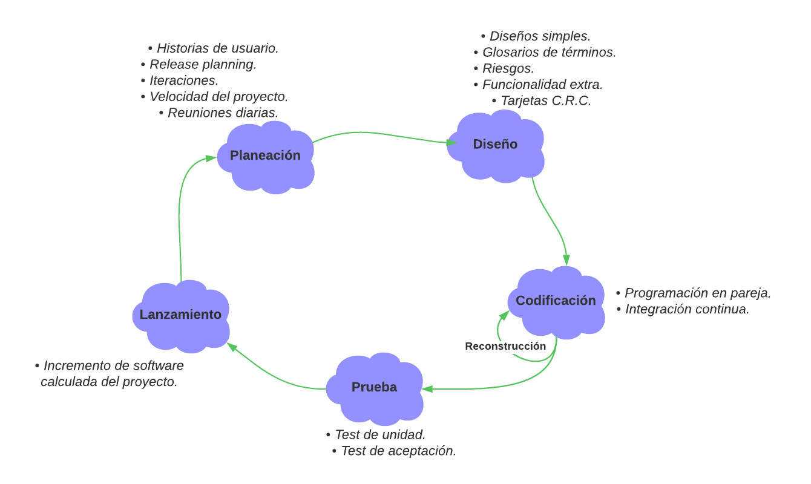
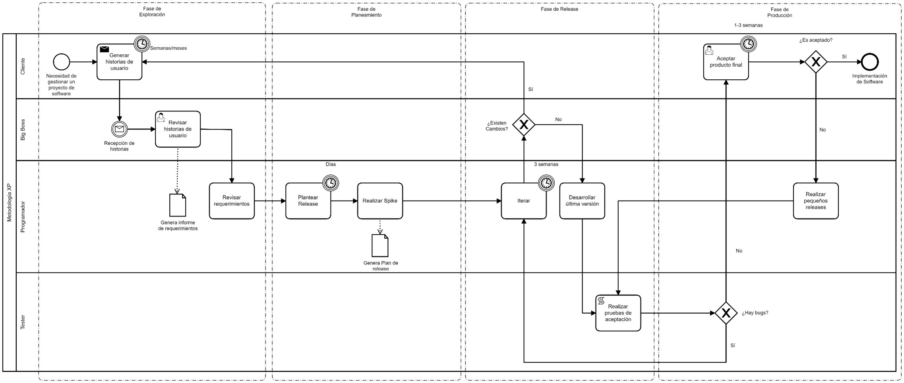

Proyecto de Software Engineering Management
Desarrollo e implementación de un sistema para el agendamiento de citas médicas de una veterinaria
Integrantes:
- Verónica Placencia | veronica.placencia@unl.edu.ec
- Azusena Toledo | carmen.toledo@unl.edu.ec
- Edinson Quizhpe | edinson.quizhpe@unl.edu.ec
- Cristian Medina | cristian.e.medina@unl.edu.ec
OBJETIVOS:
Objetivo general:
- Dsesarrollar e implementar un software para el agendamiento de citas médicas.
Objetivos específicos:
- Establecer el proceso para el sistema de agendamiento de citas mediante el uso de notación BPMN.
- Desarrollar un sistema de agendamiento de citas médicas mediante la metodología XP.
- Definir un plan de implementación para el sistema veterinario.
ALCANCE
El presente proyecto abarca la implementación de un sistema de citas médicas para una veterinaria, cuya finalidad es mejorar y facilitar el agendamiento de citas tanto para el cliente como para el veterinario. A continuación, se detalla el alcance por etapas con las actividades a realizar por cada objetivo planteado en el proyecto.
Etapa 1:
- Establecer el proceso para el sistema de agendamiento de citas mediante el uso de notación BPMN.
- Identificar las diferentes etapas del proceso de agendamiento de citas.
- Identificar los requerimientos funcionales y no funcionales para el desarrollo del sistema a través del análisis de requerimientos.
- Realizar el modelado de las etapas del proceso previamente identificadas.
- Realizar un prototipado de las interfaces, según los requerimientos funcionales encontrados.
- Documentar las especificaciones de los requisitos.
Etapa 2:
- Desarrollar un sistema veterinario de agendamiento de citas haciendo uso de la metodología XP.
- Realizar el diseño del sistema veterinario de agendamiento de citas mediante diagramas UML.
- Diseñar el documento arquitectónico del sistema veterinario de agendamiento de citas.
- Codificar el software de acuerdo con el diseño definido previamente desarrollado utilizando un lenguaje de programación.
- Ejecutar plan de pruebas.
Etapa 3:
- Definir un plan de implementación para el sistema veterinario.
- Identificar los requisitos para el plan de implementación.
- Diseñar el plan de implementación.
- Ejecutar el plan de implementación
TECNOLOGÍAS
Lenguaje de programación: Python.
En [3] se encentra la encuesta denominada “The State of Developer Ecosystem 2021” realizada por JetBrains, en donde participaron aproximadamente 32.000 programadores de todo el mundo, en donde se observa que Python es uno de los lenguajes más populares ya que según esta encuesta un 30% de desarrolladores latinoamericanos desarrollan en Python, y si apuntamos al mercado más competente como Estados Unidos este porcentaje llega al 35%, lo cual se interpreta como unos de los lenguajes de mayor crecimiento, que nuevos desarrolladores están aprendiendo y que planean a futuro adoptar o migrar. La encuesta realizada por JetBrains indica que Python es uno de los lenguajes de programación más populares en América Latina y Estados Unidos. Esto puede deberse a una variedad de factores, incluyendo el hecho de que Python es un lenguaje de programación relativamente fácil de aprender y que tiene una amplia variedad de aplicaciones en el mundo real. Además, Python es un lenguaje de programación dinámico, multiparadigma y multiplataforma. A menudo se usa como lenguaje de scripting, ya que no requiere compilación previa para ejecutar un programa y, por lo tanto, es adecuado para prototipado rápido de nuevas funciones.También se enfoca en la simplicidad y tiene una sintaxis clara que permite al lector comprender el código mucho mejor. Al ser un lenguaje dinámico, la verificación de tipos se realiza en tiempo de ejecución y no es necesario especificar de qué tipo son las variables, lo que permite una mayor flexibilidad a la hora de programar. Otra característica interesante de Python es que admite la programación orientada a objetos y, aunque no es obligatorio usarla, se encuentra integrada de forma natural en el lenguaje. Las clases de Python admiten herencia múltiple, lo que significa que una subclase puede heredar atributos y métodos de una superclase o de más de una. Python se ejecuta en la mayoría de los sistemas operativos y se usa ampliamente en aplicaciones de código abierto y en la industria.
Framework: Django.
TABLA I: FODA Django – Autoría propia.
| Fortalezas | Debilidades |
|---|---|
|
|
| Oportunidades | Amenazas |
|
|
Django se caracteriza por ser un framework muy completo, cuenta con todo lo necesario para el desarrollo de aplicaciones web de alta calidad, desde una capa de acceso a datos (ORM) hasta un sistema de plantillas y gestión de urls muy robusto, además ofrece un panel de administración muy completo. Django es un framework muy escalable, actualmente se encuentra en uso en muchos sitios web de gran tráfico como Instagram, Pinterest, Mozilla, The Guardian, entre otros. Django cuenta con una gran comunidad de usuarios y una amplia documentación oficial, lo que facilita bastante el proceso de aprendizaje.
Base de datos local: PostgreSQL.
TABLA II: PostgreSQL vs MySQL [4].
| PostgreSQL | MySQL | |
|---|---|---|
| Arquitectura | Objeto relacional; Multiproceso | Relacional; proceso único |
| Tipos de datos admitidos | Numérico, fecha/hora, carácter, booleano, enumerado, geométrico, dirección de red, JSON, XML, HSTORE, matrices, rangos, compuesto. | Numérico, fecha/hora, carácter, espacial, JSON. |
| Índices admitidos | B-tree, hash, GiST, SP-GiST, GIN y BRIN | Principalmente árbol B; R-tree, hash e índices invertidos para ciertos tipos de datos |
| Rendimiento | Adecuado para aplicaciones con un alto volumen de lecturas y escrituras | Adecuado para aplicaciones con alto volumen de lecturas |
| Seguridad | Control de acceso, múltiples opciones de conexión cifrada. | Control de acceso, conexiones cifradas. |
| Apoyo | Apoyo de la comunidad. Las empresas que tienen su propia versión de PostgreSQL pueden ofrecer soporte a su alrededor. | Soporte de la comunidad, además de contratos de soporte proporcionados por el proveedor |
Debido a que PostgreSQL es un sistema de base de datos objeto-relacional, se adapta mejor a las aplicaciones de software que requieren almacenar y analizar datos no estructurados. Los tipos de datos únicos de PostgreSQL, que incluyen tipos de datos de arreglos, matrices, objetos JSON, entre otros, son especialmente útiles para aplicaciones en las que la estructura de los datos no está totalmente establecida. PostgreSQL también es una mejor opción si planea utilizar funciones avanzadas de SQL, como la función de ventana o la función de transformación de grupo, o si necesita soporte para vistas materializadas. En conclusión, PostgreSQL es una mejor opción para aplicaciones que requieren escalabilidad y complejidad, mientras que MySQL es más adecuado para aplicaciones más simples o para prototipos.
Plataforma: Web
TABLA III: FODA plataforma web – Autoría propia.
| Fortalezas | Debilidades |
|---|---|
|
|
| Oportunidades | Amenazas |
|
|
Sistema de control de versiones: Git / Infraestructura Git: GitHub
Según Mozilla MDN: “Git en realidad es un sistema de control de versiones distribuido, lo cual significa que se realiza una copia completa del repositorio que contiene la base de código en tu computadora (y en la de todos los demás). Realizas cambios en tu propia copia, y luego empujas esos cambios nuevamente al servidor, donde un administrador decidirá si fusiona tus cambios con la copia maestra” [5]. Por lo que, al trabajar en equipos en un proyecto, el uso de Git es un sistema indispensable muy completo que nos permite gestionar de una manera sencilla los cambios en el código de un archivo para verificar las diferencias entre las diferentes versiones, restaurar versiones antiguas si ocurre un error, y fusionar las distintas versiones. Así mismo Mozilla MDN especifica que: “El VCS más popular es Git, junto con GitHub, un sitio que proporciona alojamiento para tus repositorios y varias herramientas para trabajar con ellos” [5]. Por lo que se usara Git con GitHub ya que se requiere un servidor, una manera fácil de compartir los repositorios con otras personas o personas del equipo de desarrollo, y una serie de herramientas útiles para administrar problemas, tareas y características.Metodología de desarrollo: XP (eXtreme Programming).
TABLA IV: FODA XP – Autoría propia.
| Fortalezas | Debilidades |
|---|---|
|
|
| Oportunidades | Amenazas |
|
|
La metodología XP es una buena opción de desarrollo de software debido a sus fortalezas y oportunidades ya que se adapta bien a los cambios y ofrece una buena base para el trabajo en equipo. La comunicación es clave para el éxito del proyecto y la retroalimentación continua permite un mejor seguimiento del proyecto.
Definición
Es una metodología ágil y flexible utilizada para la gestión de proyectos que mira “al software como solución ágil y no como proyectos arquitectónicos” [1].Objetivo:
Se centra en potenciar las relaciones interpersonales del equipo de desarrollo como clave del éxito mediante el trabajo en equipo, el aprendizaje continuo y el buen clima de trabajo [2].Roles:
- Cliente: Responsable de definir y conducir el proyecto, así como sus objetivos.
- Programadores: Estiman los tiempos de desarrollo de cada una de las actividades y programan el proyecto teniendo en cuenta estos tiempos.
- Tester: Encargado de Pruebas.
- Tracker: Encargado de Seguimiento.
- Coach o Entrenador: Tiene el papel del líder el cual guía y orienta al equipo en todo el proyecto.
- Big Boss: Es el gerente del proyecto y tiene una idea general de todo el proyecto y estar familiarizado con su estado.
Fases:
Figura 1: Fases de la metodología XP – Autoría Propia.
- Fase 1: Planificación. Según la identificación de los requerimientos del cliente, se priorizan y se descomponen en posibles funcionalidades. Si se siguen las iteraciones de forma regular, se debería obtener un software útil, funcional y listo para lanzar cada poca semana. Esto proporcionaría una gran cantidad de flexibilidad y permitiría a los desarrolladores incorporar los cambios de forma rápida y eficiente.
- Fase 2: Diseño. El diseño de un sistema de información debe hacerse de la manera más simple posible para que sea fácil de comprender y implementar. Esto ahorrará tiempo y esfuerzo en el desarrollo a largo plazo.
- Fase 3: Codificación. La programación se desarrolla en parejas para estandarizarla y que sea más organizada y planificada; se debe realizar la codificación siguiendo estándares ya establecidos.
- Fase 4: Pruebas. Los proyectos requieren pruebas automatizadas y continuas para garantizar su éxito. El cliente puede realizar y validar estas pruebas para asegurar el avance del proyecto.
- Fase 5: Lanzamiento Después de completar todos los requerimientos del cliente e implementar las funcionalidades requeridas, el software debe ser útil y se puede incorporar al producto.
Plataforma: Web
Se usará una arquitectura monolítica.
Definición:
Consiste en implementar un software autosuficiente que contenga toda la funcionalidad necesaria para realizar la tarea para la cual fue diseñada, sin contar con dependencias externas que complementan su funcionalidad.
Estructura:
Se tiene una serie de paquetes bien organizados y un código muy claro, en donde cada paquete puede tener cierta parte de la funcionalidad y están desacoplados uno de otro. Sin embargo, al momento de compilar el código, todo se empaqueta como un solo software.
Diagrama BPMN de metodología XP
Figura 2: Diagrama BPMN de Metodología XP – Autoría Propia
Bibliografía
[1] J. F. González, «Introducción a las metodologías ágiles», p. 31-49.
[2] H. Vite Cevallos, K. Montero, y J. Cuesta, «Metodologías ágiles frente a las tradicionales en el proceso de desarrollo de software», Espirales: Revista Multidisciplinaria de Investigación, vol. 2, jun. 2018, doi: 10.31876/re.v2i17.269.
[3]«The State of Developer Ecosystem in 2021 Infographic», JetBrains: Developer Tools for Professionals and Teams. https://www.jetbrains.com/lp/devecosystem-2021
[4]«PostgreSQL vs. MySQL: What You Need to Know | Blog | Fivetran». https://www.fivetran.com/blog/postgresql-vs-mysql (accedido 17 de mayo de 2022).
[5]«Git y GitHub - Aprende sobre desarrollo web | MDN». https://developer.mozilla.org/es/docs/Learn/Tools_and_testing/GitHub